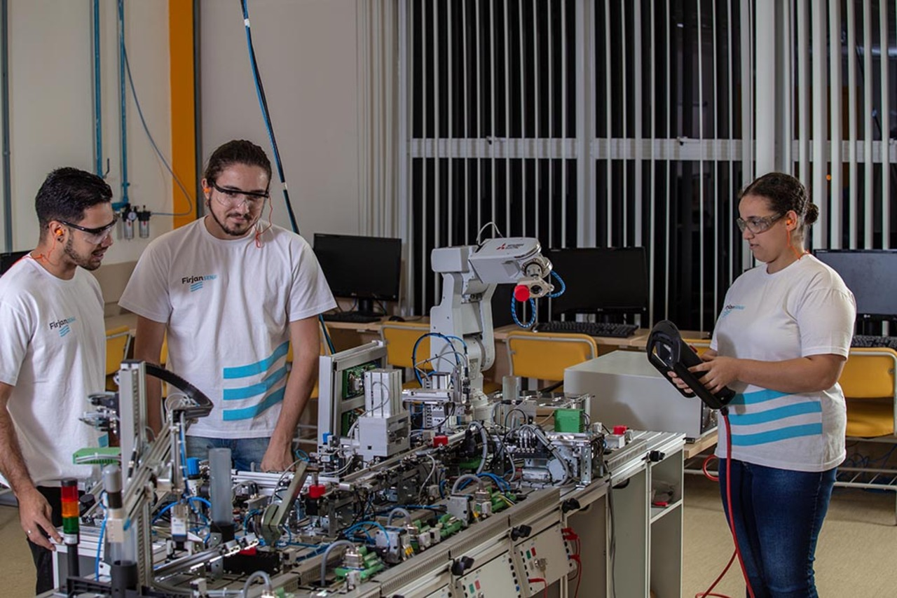

Estudantes do SENAI. Divulgação: Firjan SENAI
Cursos do SENAI
O SENAI oferece cursos voltados para a indústria, com foco em capacitação técnica, prática e alinhada às demandas do mercado de trabalho.
Escolha a modalidade ideal para você e inicie seu futuro profissional agora!
Modalidades de Cursos
Cursos Técnicos
- Duração média: 1,5 a 2 anos
- Indicado para quem deseja se preparar para o mercado de trabalho com formação técnica de nível médio
- Exemplo de cursos:
- Técnico em Mecânica
- Técnico em Eletrotécnica
- Técnico em Informática
- Técnico em Segurança do Trabalho
Cursos de Aprendizagem Industrial
- Para jovens de 14 a 24 anos
- Gratuitos, com foco na primeira qualificação profissional.
- Exemplo de cursos:
- Assistente de Produção
- Eletricista Industrial
Cursos de Qualificação Profissional
- Duração curta (de semanas a poucos meses)
- Para quem quer aprender uma nova profissão ou melhorar seu desempenho.
- Exemplo de cursos:
- Soldador
- Operador de Máquinas CNC
- Montador de Sistemas Eletroeletrônicos
Cursos de Aperfeiçoamento
- Voltados para profissionais que já atuam na área e querem se atualizar.
- Exemplo de cursos:
- Leitura e Interpretação de Desenho Técnico
- Programação Avançada em CLP